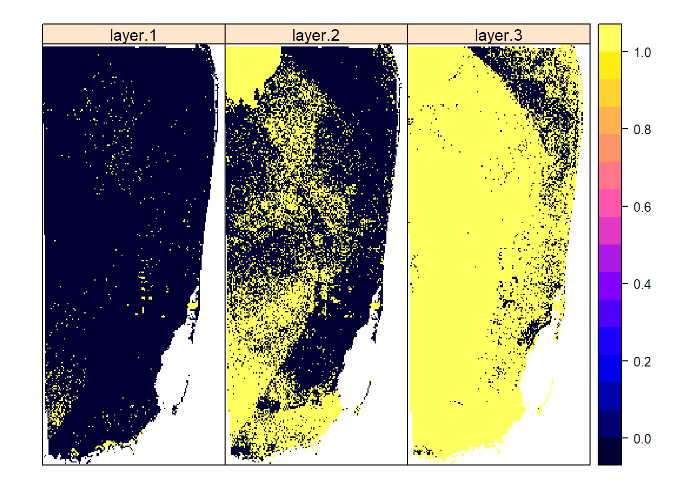

Social Disparities of Sea Level Rise in Miami?
Final Project GEO 503
Hannah Stokes
Introduction
For this final project, I am interested in exploring ways in which projected impacts of sea level rise (under different scenarios) along the US coast may demonstrate disparities in affected demographic groups. I look at three Florida counties that cover the extensive stretch of Miami urban area: Miami-Dade County, Broward County, and Palm Beach County. I will compare projected spatial impacts of sea level rise to spatial socio-economic data from the US Decennial Census to see if there are any correlations between sea-level rise (and subsequent risk from storm surges) and socio-economic indicators. My inspiration for this project came from reading an article about how rising sea levels and flooding in Atlantic City is disproportionately affecting low-income residents, and the suggestion that this may be the case in other coastal US cities (Upton, 2017). Additionally, we have seen tremendous damage from hurricanes in the Caribbean and Gulf of Mexico in the past few weeks. The increasing frequency of strong hurricanes likely relates to climate change, and this will couple with rising sea levels in causing further damage to coasts and islands. I hypothesize that I will find greater levels of flood/storm surge risk to lower-income neighborhoods, and perhaps to ethnic minority neighborhoods, or the exact opposite due to high-value coastal properties, but less correlation for middle-income communities.
Materials and methods
(Narrative and most code will go here. Describe what you are doing and show how to do it (with code).)
These are the steps I used:
- I downloaded the GADM boundary files for the three Florida counties mentioned above, then combined these three into a single polygon “comb”.
- I downloaded the SRTM elevation data for the tile containing Florida, based on the centerpoint coordinates of that tile. This gave me elevation data for all of Florida, which I called “dem_fl”. I then created a mask of the elevation data based on the “comb” boundaries, and cropped it to the “comb” plot extent, resulting in a plot of just the elevation data for the three counties.
Load any required packages in a code chunk (you may need to install some packages):
library(dplyr)
library(ggplot2)
library(maps)
library(spocc)
library(knitr)
library(tidyr)
library(raster)
library(rasterVis)
library(scales)
library(rgeos)
library(maptools)
library(sp)
library(sf)
knitr::opts_chunk$set(cache=TRUE) # cache the results for quick compilinggetData("ISO3")%>%
as.data.frame%>%
filter(NAME=="United States")## ISO3 NAME
## 1 USA United Statesus=getData('GADM', country='USA', level=2)
fl1<-subset(us,NAME_1=="Florida")
head(fl1)## OBJECTID ID_0 ISO NAME_0 ID_1 NAME_1 ID_2 NAME_2 HASC_2
## 318 318 244 USA United States 10 Florida 318 Alachua US.FL.AL
## 319 319 244 USA United States 10 Florida 319 Baker US.FL.BK
## 320 320 244 USA United States 10 Florida 320 Bay US.FL.BY
## 321 321 244 USA United States 10 Florida 321 Bradford US.FL.BA
## 322 322 244 USA United States 10 Florida 322 Brevard US.FL.BE
## 323 323 244 USA United States 10 Florida 323 Broward US.FL.BO
## CCN_2 CCA_2 TYPE_2 ENGTYPE_2 NL_NAME_2 VARNAME_2
## 318 NA County County
## 319 NA County County
## 320 NA County County
## 321 NA County County
## 322 NA County County
## 323 NA County Countybrwd<-subset(fl1,NAME_2=="Broward")
mi_da<-subset(fl1,NAME_2=="Miami-Dade")
plmbch<-subset(fl1, NAME_2=="Palm Beach")
comb<-rbind(brwd,mi_da,plmbch)
plot(comb)
dem_fl<-getData("SRTM",lon=-82.5,lat=27.5)
miami_mask<-mask(dem_fl,comb)
spplot(miami_mask)miami_cropmask<-crop(miami_mask,comb)
spplot(miami_cropmask)
Results
(Show tables, plots, etc. and describe them.)
Conclusions
(What have you learned? Are there any broader implications?)
References
Kulp, S., & Strauss, B. H. (2017). Rapid escalation of coastal flood exposure in US municipalities from sea level rise. Climate Change, 142, 477-489.
Tebaldi, C., Strauss, B. H., & Zervas, C. E. (2012). Modelling sea level rise impacts on storm surges along US coasts. Environmental Research Letters, 7, 1-11.
Upton, J. (2017). The injustice of Atlantic City’s floods. http://reports.climatecentral.org/atlantic-city/sea-level-rise/